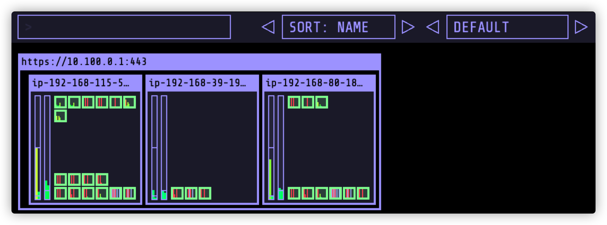
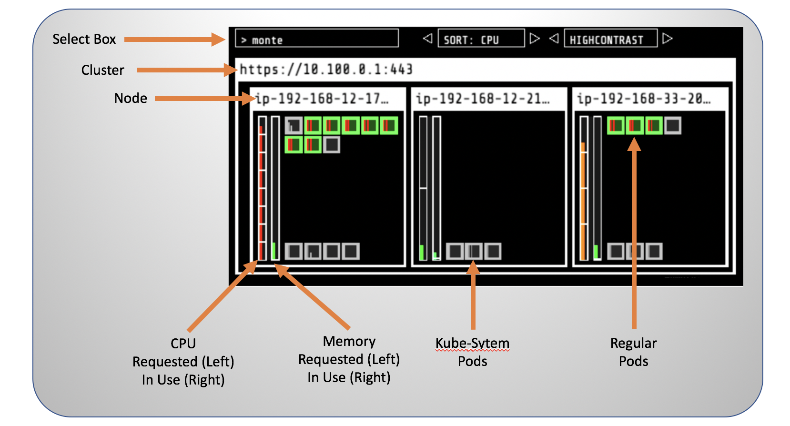
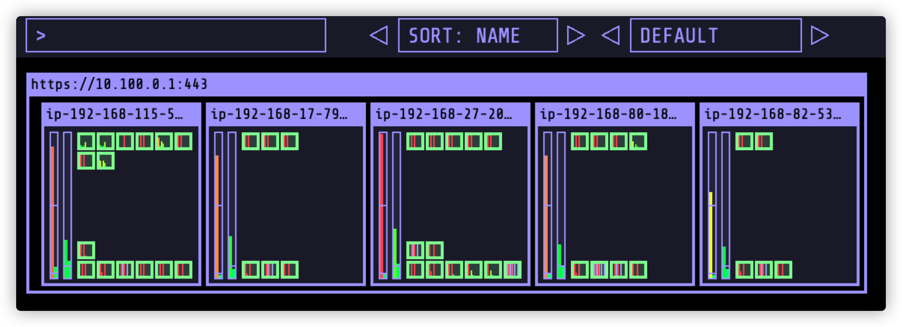

我们将结合 kube-ops-view （通过Helm部署，官方地址 ）来实现弹性伸缩的可视化配置的数据源。
--set service.type=LoadBalancer 表示把kube-ops-view的入口部署到ELB上（从而避免了必须使用kube-proxy做端口转发）helm install kube-ops-view \
stable/kube-ops-view \
--set service.type=LoadBalancer \
--set rbac.create=True
helm list
如果返回类似如下表示部署成功
NAME NAMESPACE REVISION UPDATED STATUS CHART APP VERSION
kube-ops-view default 1 2021-06-25 14:24:03.611338556 +0000 UTC deployed kube-ops-view-1.2.4 20.4.0
kubectl get svc kube-ops-view | tail -n 1 | awk '{ print "Kube-ops-view URL = http://"$4 }'
系统会返回类似的结果
Kube-ops-view URL = http://a368d8f0ea6ab422eabb8445818b09fd-265230446.us-east-1.elb.amazonaws.com
打开其中的 URL（因为此处我们使用了ELB，在创建ELB和传播DNS的时候需要点时间，一般需要1-2分钟左右），会获得一个如下图所示的监控数据页面

监控截图的含义如下 
在EKS里面，集群自动伸缩是集成了AWS的Auto Scaling Groups（ASG）服务实现的，支持如下几种方式
参考官网 https://github.com/kubernetes/autoscaler/blob/master/cluster-autoscaler/cloudprovider/aws/README.md
查看系统已经部署好的asg的内容
aws autoscaling \
describe-auto-scaling-groups \
--query "AutoScalingGroups[? Tags[? (Key=='eks:cluster-name') && Value=='ekslab']].[AutoScalingGroupName, MinSize, MaxSize,DesiredCapacity]" \
--output table
如下所示（默认配置最小1个，最大和实际需要的实例数量都是3个）
-------------------------------------------------------------
| DescribeAutoScalingGroups |
+-------------------------------------------+----+----+-----+
| eks-2abd20a6-2880-5ca0-bdc4-71eb19df6135 | 1 | 3 | 3 |
+-------------------------------------------+----+----+-----+
此处我们把最小实例数量调整为3个，最大的实例数量调整成5个
# we need the ASG name
export ASG_NAME=$(aws autoscaling describe-auto-scaling-groups --query "AutoScalingGroups[? Tags[? (Key=='eks:cluster-name') && Value=='ekslab']].AutoScalingGroupName" --output text)
# increase max capacity up to 5
aws autoscaling \
update-auto-scaling-group \
--auto-scaling-group-name ${ASG_NAME} \
--min-size 3 \
--desired-capacity 3 \
--max-size 5
# Check new values
aws autoscaling \
describe-auto-scaling-groups \
--query "AutoScalingGroups[? Tags[? (Key=='eks:cluster-name') && Value=='ekslab']].[AutoScalingGroupName, MinSize, MaxSize,DesiredCapacity]" \
--output table
此处我们使用 IAM Roles for Service Accounts，有兴趣的读者请参考 官方文档
使用如下的方式启用IAM角色和Service Accounts的功能
eksctl utils associate-iam-oidc-provider \
--cluster ekslab \
--approve
配置IAM角色
mkdir ~/environment/cluster-autoscaler && cd ~/environment/cluster-autoscaler
cat <<EoF > ~/environment/cluster-autoscaler/k8s-asg-policy.json
{
"Version": "2012-10-17",
"Statement": [
{
"Action": [
"autoscaling:DescribeAutoScalingGroups",
"autoscaling:DescribeAutoScalingInstances",
"autoscaling:DescribeLaunchConfigurations",
"autoscaling:DescribeTags",
"autoscaling:SetDesiredCapacity",
"autoscaling:TerminateInstanceInAutoScalingGroup",
"ec2:DescribeLaunchTemplateVersions"
],
"Resource": "*",
"Effect": "Allow"
}
]
}
EoF
aws iam create-policy \
--policy-name k8s-asg-policy \
--policy-document file://~/environment/cluster-autoscaler/k8s-asg-policy.json
把IAM Role和SA关联起来
eksctl create iamserviceaccount \
--name cluster-autoscaler \
--namespace kube-system \
--cluster ekslab \
--attach-policy-arn "arn:aws:iam::${ACCOUNT_ID}:policy/k8s-asg-policy" \
--approve \
--override-existing-serviceaccounts
查看并确认
kubectl -n kube-system describe sa cluster-autoscaler
准备部署配置文件
cd ~/environment/cluster-autoscaler
cat > cluster-autoscaler-autodiscover.yaml <<EOF
---
apiVersion: rbac.authorization.k8s.io/v1
kind: ClusterRole
metadata:
name: cluster-autoscaler
labels:
k8s-addon: cluster-autoscaler.addons.k8s.io
k8s-app: cluster-autoscaler
rules:
- apiGroups: [""]
resources: ["events", "endpoints"]
verbs: ["create", "patch"]
- apiGroups: [""]
resources: ["pods/eviction"]
verbs: ["create"]
- apiGroups: [""]
resources: ["pods/status"]
verbs: ["update"]
- apiGroups: [""]
resources: ["endpoints"]
resourceNames: ["cluster-autoscaler"]
verbs: ["get", "update"]
- apiGroups: [""]
resources: ["nodes"]
verbs: ["watch", "list", "get", "update"]
- apiGroups: [""]
resources:
- "pods"
- "services"
- "replicationcontrollers"
- "persistentvolumeclaims"
- "persistentvolumes"
verbs: ["watch", "list", "get"]
- apiGroups: ["extensions"]
resources: ["replicasets", "daemonsets"]
verbs: ["watch", "list", "get"]
- apiGroups: ["policy"]
resources: ["poddisruptionbudgets"]
verbs: ["watch", "list"]
- apiGroups: ["apps"]
resources: ["statefulsets", "replicasets", "daemonsets"]
verbs: ["watch", "list", "get"]
- apiGroups: ["storage.k8s.io"]
resources: ["storageclasses", "csinodes"]
verbs: ["watch", "list", "get"]
- apiGroups: ["batch", "extensions"]
resources: ["jobs"]
verbs: ["get", "list", "watch", "patch"]
- apiGroups: ["coordination.k8s.io"]
resources: ["leases"]
verbs: ["create"]
- apiGroups: ["coordination.k8s.io"]
resourceNames: ["cluster-autoscaler"]
resources: ["leases"]
verbs: ["get", "update"]
---
apiVersion: rbac.authorization.k8s.io/v1
kind: Role
metadata:
name: cluster-autoscaler
namespace: kube-system
labels:
k8s-addon: cluster-autoscaler.addons.k8s.io
k8s-app: cluster-autoscaler
rules:
- apiGroups: [""]
resources: ["configmaps"]
verbs: ["create","list","watch"]
- apiGroups: [""]
resources: ["configmaps"]
resourceNames: ["cluster-autoscaler-status", "cluster-autoscaler-priority-expander"]
verbs: ["delete", "get", "update", "watch"]
---
apiVersion: rbac.authorization.k8s.io/v1
kind: ClusterRoleBinding
metadata:
name: cluster-autoscaler
labels:
k8s-addon: cluster-autoscaler.addons.k8s.io
k8s-app: cluster-autoscaler
roleRef:
apiGroup: rbac.authorization.k8s.io
kind: ClusterRole
name: cluster-autoscaler
subjects:
- kind: ServiceAccount
name: cluster-autoscaler
namespace: kube-system
---
apiVersion: rbac.authorization.k8s.io/v1
kind: RoleBinding
metadata:
name: cluster-autoscaler
namespace: kube-system
labels:
k8s-addon: cluster-autoscaler.addons.k8s.io
k8s-app: cluster-autoscaler
roleRef:
apiGroup: rbac.authorization.k8s.io
kind: Role
name: cluster-autoscaler
subjects:
- kind: ServiceAccount
name: cluster-autoscaler
namespace: kube-system
---
apiVersion: apps/v1
kind: Deployment
metadata:
name: cluster-autoscaler
namespace: kube-system
labels:
app: cluster-autoscaler
spec:
replicas: 1
selector:
matchLabels:
app: cluster-autoscaler
template:
metadata:
labels:
app: cluster-autoscaler
annotations:
prometheus.io/scrape: 'true'
prometheus.io/port: '8085'
spec:
serviceAccountName: cluster-autoscaler
containers:
- image: k8s.gcr.io/cluster-autoscaler:v1.20.0
name: cluster-autoscaler
resources:
limits:
cpu: 100m
memory: 300Mi
requests:
cpu: 100m
memory: 300Mi
command:
- ./cluster-autoscaler
- --v=4
- --stderrthreshold=info
- --cloud-provider=aws
- --skip-nodes-with-local-storage=false
- --expander=least-waste
- --node-group-auto-discovery=asg:tag=k8s.io/cluster-autoscaler/enabled,k8s.io/cluster-autoscaler/ekslab
- --balance-similar-node-groups
- --skip-nodes-with-system-pods=false
volumeMounts:
- name: ssl-certs
mountPath: /etc/ssl/certs/ca-certificates.crt
readOnly: true
imagePullPolicy: "Always"
volumes:
- name: ssl-certs
hostPath:
path: "/etc/ssl/certs/ca-bundle.crt"
EOF
执行部署
kubectl apply -f cluster-autoscaler-autodiscover.yaml
为了阻止CA删除正在运行的Pod，我们需要修改参数 cluster-autoscaler.kubernetes.io/safe-to-evict 的内容
kubectl -n kube-system \
annotate deployment.apps/cluster-autoscaler \
cluster-autoscaler.kubernetes.io/safe-to-evict="false"
接下来更新Cluster Autoscaler 的 Image 版本
# we need to retrieve the latest docker image available for our EKS version
export K8S_VERSION=$(kubectl version --short | grep 'Server Version:' | sed 's/[^0-9.]*\([0-9.]*\).*/\1/' | cut -d. -f1,2)
export AUTOSCALER_VERSION=$(curl -s "https://api.github.com/repos/kubernetes/autoscaler/releases" | grep '"tag_name":' | sed -s 's/.*-\([0-9][0-9\.]*\).*/\1/' | grep -m1 ${K8S_VERSION})
echo $AUTOSCALER_VERSION
kubectl -n kube-system \
set image deployment.apps/cluster-autoscaler \
cluster-autoscaler=us.gcr.io/k8s-artifacts-prod/autoscaling/cluster-autoscaler:v${AUTOSCALER_VERSION}
可以跟踪系统详细日志查看过程
kubectl -n kube-system logs -f deployment/cluster-autoscaler
通过如下方式部署一个测试用的Nginx服务
cd ~/environment/cluster-autoscaler/
cat <<EoF > nginx.yaml
apiVersion: apps/v1
kind: Deployment
metadata:
name: nginx-to-scaleout
spec:
replicas: 12
selector:
matchLabels:
app: nginx
template:
metadata:
labels:
service: nginx
app: nginx
spec:
containers:
- image: nginx
name: nginx-to-scaleout
resources:
limits:
cpu: 500m
memory: 512Mi
requests:
cpu: 500m
memory: 512Mi
EoF
kubectl apply -f ~/environment/cluster-autoscaler/nginx.yaml
kubectl get deployment/nginx-to-scaleout
我们会发现部分pod会处于 “pending” 状态，因为它在等待EC2扩容
kubectl get pods -l app=nginx -o wide --sort-by=.status.phase --watch
类似如下
NAME READY STATUS RESTARTS AGE IP NODE NOMINATED NODE READINESS GATES
nginx-to-scaleout-6fcd49fb84-dtvms 0/1 Pending 0 7s <none> <none> <none> <none>
nginx-to-scaleout-6fcd49fb84-vq2k5 0/1 Pending 0 7s <none> <none> <none> <none>
nginx-to-scaleout-6fcd49fb84-jg72q 0/1 Pending 0 7s <none> <none> <none> <none>
nginx-to-scaleout-6fcd49fb84-vg4n2 0/1 Pending 0 7s <none> <none> <none> <none>
nginx-to-scaleout-6fcd49fb84-6mm6r 0/1 Pending 0 7s <none> <none> <none> <none>
nginx-to-scaleout-6fcd49fb84-khtvz 1/1 Running 0 8s 192.168.68.61 ip-192-168-115-52.ec2.internal <none> <none>
nginx-to-scaleout-6fcd49fb84-p5sgq 1/1 Running 0 8s 192.168.94.122 ip-192-168-80-184.ec2.internal <none> <none>
nginx-to-scaleout-6fcd49fb84-pwz8f 1/1 Running 0 8s 192.168.126.147 ip-192-168-115-52.ec2.internal <none> <none>
nginx-to-scaleout-6fcd49fb84-rkhmb 1/1 Running 0 8s 192.168.20.36 ip-192-168-27-201.ec2.internal <none> <none>
nginx-to-scaleout-6fcd49fb84-jr4hz 1/1 Running 0 8s 192.168.51.192 ip-192-168-27-201.ec2.internal <none> <none>
nginx-to-scaleout-6fcd49fb84-fx4c4 1/1 Running 0 8s 192.168.104.159 ip-192-168-80-184.ec2.internal <none> <none>
nginx-to-scaleout-6fcd49fb84-wlxnv 1/1 Running 0 8s 192.168.59.194 ip-192-168-27-201.ec2.internal <none> <none>
可以查看详细的日志信息
kubectl -n kube-system logs -f deployment/cluster-autoscaler
日志指出准备拉起2个节点
I0625 15:42:01.840530 1 scale_up.go:364] Upcoming 2 nodes
I0625 15:42:01.840624 1 scale_up.go:400] Skipping node group eks-2abd20a6-2880-5ca0-bdc4-71eb19df6135 - max size reached
此时我们可以打开 EC2的控制台，查看对应的EC2部署情况。
也可以在kube-ops-view 里查看节点和Pod的即时变化： 
再次查看eks集群的节点
kubectl get nodes
我们会发现已经由原来的3个节点变成了5个节点，如下所示
NAME STATUS ROLES AGE VERSION
ip-192-168-115-52.ec2.internal Ready <none> 11h v1.20.4-eks-6b7464
ip-192-168-17-79.ec2.internal Ready <none> 5m57s v1.20.4-eks-6b7464
ip-192-168-27-201.ec2.internal Ready <none> 11h v1.20.4-eks-6b7464
ip-192-168-80-184.ec2.internal Ready <none> 11h v1.20.4-eks-6b7464
ip-192-168-82-53.ec2.internal Ready <none> 5m50s v1.20.4-eks-6b7464
在 EKS 的配置默认值里面，一个集群可以配置10个节点组，每个节点组可以有100个工作节点。
我们通过eksctl创建集群时，没有指定节点组（默认1个），意味着这个集群最多可以扩容到100个EC2节点，然后再怎么加压也不会扩容了，这个时候就需要添加节点组（最简单的方式就是通过控制台手工增加）。